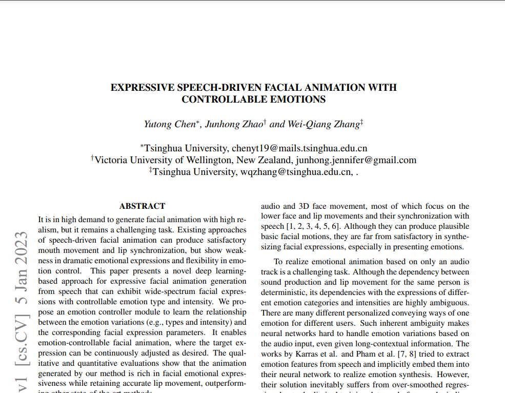
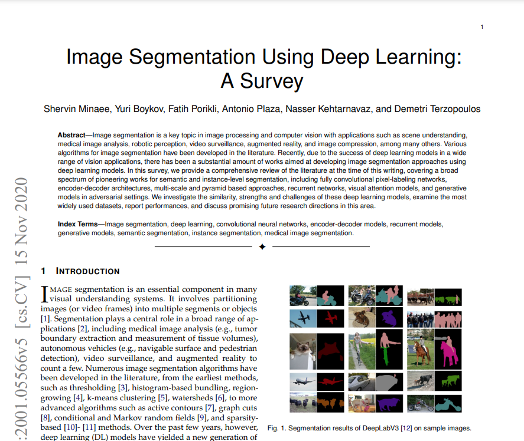
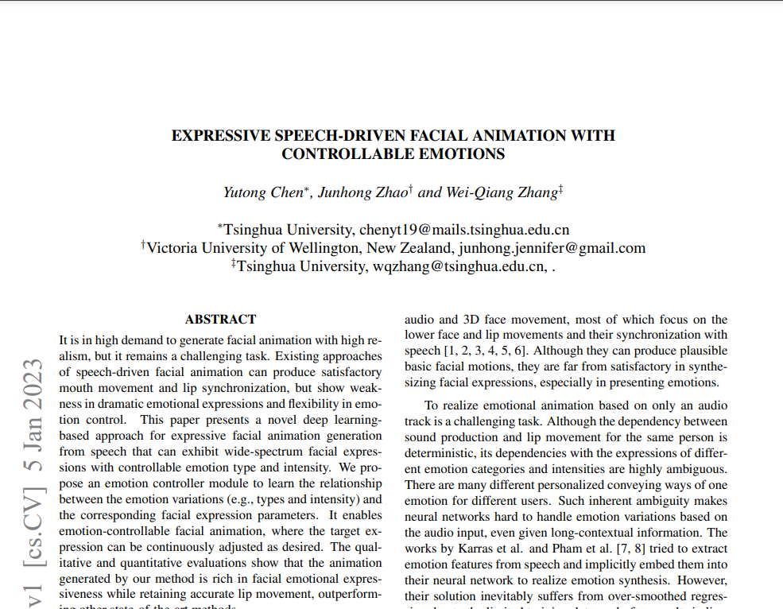
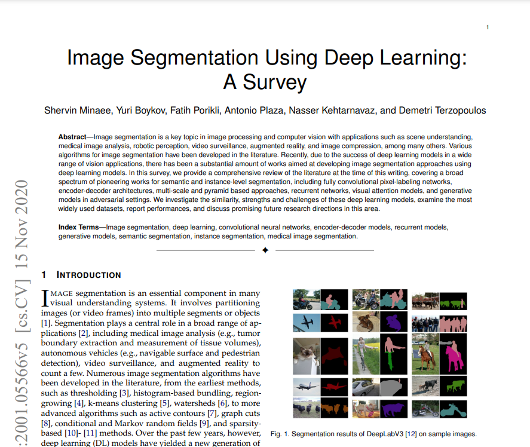

Welcome to the page presenting my studies. Discover the syllabus of my studies and the technologies I've worked on.


[Mines Nancy] Computer Science Department - Artificial Intelligent Systems Programme
September 2020 - September 2024 | Nancy, France
Les Mines Nancy, a prestigious engineering school in the Mines-Télécom group, trains general engineers with strong expertise in science, technology and management. Renowned for its academic excellence and links with industry, it offers specialisations in innovative fields such as energy, materials and artificial intelligence.
Relevant coursework:
- Machine Learning and differentiable programming : CNN, RNN, Transformers, LLMs, Evaluation methods, Scaling laws, Uncertainty in Deep Learning
- Scalable architectures & parallel computing : Parallel algorithms, Software architectures, Scalability, Elasticity
- Software Engineering.
- Statistical Inference.
- Data Analysis.
- Image processing.
Technologies & Skills: Python, PyTorch, Numpy, Pandas, Git, Linux environments, SQL, Docker, Matlab, SQL, R, JavaScript, HTML, CUDA, Supervised learning, Unsupervised learning, LLM.
Useful links:


 



[Université de Lorraine] Master 2 Computer Science - Learning, Vision and Robotics Programme
September 2023 - September 2024 | Nancy, France
I took this programme as a double degree in my final year of study to deepen my technical knowledge in the field of Machine Learning and Computer Vision. The courses consisted of lectures during which I was able to study how several technologies worked, which I then implemented and tested during practical work. I also had the opportunity to study variants in detail during reviews and presentations of the scientific literature.
Relevant coursework:
- Learning, Reasoning under uncertainty: Neural networks and clustering, Hidden Markov Model and Bayesian network, Markov decision process and Reinforcement learning
- Shape Modelling and Recognition: Representation and shape comparison metrics, Linear model and Principal Component Analysis, Estimation methods and robust estimation, Loss and neural networks
- Statistical Learning and Model Selection: Statistical learning theory and risk estimation, model selection, variable selection
- Image processing: Contour and shape descriptors in images, Segmentation
- Multi-modal spoken communication: Automatic Speech Recognition, Text-To-Speech Synthesis
- Augmented Reality: Pose estimation, visual odometry, global positioning
Technologies & Skills: Python, PyTorch, Numpy, Scikit-learn, Matlab, C/C++, OpenCV, Supervised learning, Unsupervised learning, Reinforcement learning, Segmentation, Text-to-speech Synthesis, Automatic Speech Recognition, Gaussian splatting, Reviews and presentations of the scientific literature
Useful links:
- University website
- Reviewed and presented literature: Gaussian Splatting SLAM
- Reviewed and presented literature: Expressive Speech-driven Facial Animation with controllable emotions
- Reviewed and presented literature: Image Segmentation Using Deep Learning: A Survey
- Reviewed and presented literature: Architectures neuronales bout-en-bout pour la comprehension de la parole (written in French)
[CPGE Joffre] PCSI/PSI*
September 2018 - July 2020 | Montpellier, France
The CPGE (Preparatory Classes for Grandes Écoles) are intensive two-year post-secondary programs preparing students for competitive exams to enter elite engineering schools. The PCSI (Physics, Chemistry, and Engineering Science) and PSI* (Physics and Engineering Science, advanced track) are focused on mathematics, physical sciences, and engineering, with the second year being particularly selective.
Relevant coursework:
- Mathematics: Linear algebra, Real pre-Hilbert spaces, Euclidean spaces, Normal vector spaces, Sequences and series of functions, Integration over any interval, Discrete and continuous random variables, Differential calculus
- Physics: Electronics, Transport phenomena, Macroscopic balances, Electromagnetism, Power conversion, Wave physics, Chemical transformations of matter: thermodynamic and kinetic aspects, Thermodynamic and kinetic aspects of electrochemistry
- Engineering science: Functional analysis and modelling of systems, Study of materials and dimensioning, Automation and control of systems, Mechanics of non-deformable solids
- Computer science: Programming (Python, fundamental algorithms), Data structures (lists, stacks, trees), Introduction to complexity and logic.